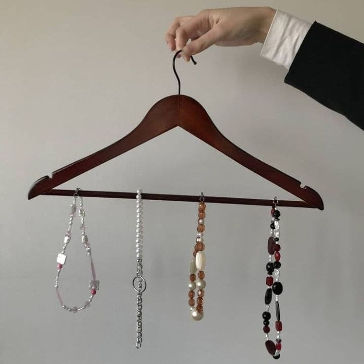

Фенікс постає з попелу
⠀⠀
Саме таку концепцію має наша нова колекція, у якій ми старим прикрасам дали нове життя, поєднавши їхні намистини з новими, створюючи гармонію. Вони отримали друге дихання, при цьому ставши унікальними
⠀⠀
Так і з людьми. Часом ми можемо вигорати, спотикатися, падати. Нам здається, що ми зруйновані вщент. Але це стає очищенням, і на місці руїни ми будуємо щось нове і краще. Колекція "Фенікс" націлена на тих, хто перероджується або вже переродився. Ці прикраси стануть чудовим способом ще раз це підкреслити
⠀⠀
Поставайте з попелу разом з RK